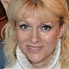

Дошкольное отделение школы № 1288
В 2015 году 48% первоклассников Школы № 1288 пришли из дошкольного отделения.
- улица Зорге, 14к3
- улица Куусинена, 3
- улица Куусинена, 4Ак2
- Хорошёвское шоссе, 82к10
- Хорошёвское шоссе, 68А
- Хорошёвское шоссе, 54
- 3-й Хорошёвский проезд, 2
- 3-й Хорошёвский проезд, 2
Воспитатели
Воспитатели, которых чаще всего благодарят родители (отзывы и профили сотрудников взяты с официального сайта школы):|
Логопед
Кирдяшова Наталья Петровна
2 благодарности |
Воспитатель
Надворная Виолетта Николаевна
2 благодарности |
Воспитатель
Паршина Марина Ивановна
1 благодарность |
Муз. рук.
Рачко Людмила Викторовна
1 благодарность |
|

Воспитатель
Пирожкова Лариса Анатольевна
1 благодарность |
 Воспитатель
Штолым Нина Анатольевна
Воспитатель
Штолым Нина Анатольевна
1 благодарность |
Отзывы
Данные собраны c официального сайта школы и через форму для отзывов.
Уважаемая Елена Васильевна!
Коллектив родителей группы 11 СП №2 выражает огромную благодарность администрации СП и педагогическому коллективу , а именно Этумян Марине Олеговне, Горшковой Ирине Александровне, воспитателям нашей группы Штолым Нине Анатольевне, Паршиной Марине Ивановне и Угодниковой Зинаиде Ивановне за организацию и проведение праздников, посвященных Дню защитника Отечества и 8 марта.
Спасибо нашим любимым воспитателям за чуткое и внимательное отношение к нашим детям , за теплую атмосферу и за улыбки ребят!!!
От всей души поздравляем Вас и весь педагогический коллектив с Праздником Весны !!!
Желаем вам весеннего настроения, улыбок, тепла и любви! Успехов в вашем нелегком труде, крепкого здоровья и процветания!
С благодарностью,
родители 11 группы СП №2.
Коллектив родителей группы 11 СП №2 выражает огромную благодарность администрации СП и педагогическому коллективу , а именно Этумян Марине Олеговне, Горшковой Ирине Александровне, воспитателям нашей группы Штолым Нине Анатольевне, Паршиной Марине Ивановне и Угодниковой Зинаиде Ивановне за организацию и проведение праздников, посвященных Дню защитника Отечества и 8 марта.
Спасибо нашим любимым воспитателям за чуткое и внимательное отношение к нашим детям , за теплую атмосферу и за улыбки ребят!!!
От всей души поздравляем Вас и весь педагогический коллектив с Праздником Весны !!!
Желаем вам весеннего настроения, улыбок, тепла и любви! Успехов в вашем нелегком труде, крепкого здоровья и процветания!
С благодарностью,
родители 11 группы СП №2.
Хочу выразить огромную благодарность всему педагогическому составу самого лучшего детского сада (бывший 504,а сейчас СП 3 "Голубята"). 18 ноября побывала на дне открытых дверей. Очень интересно было посмотреть как проходят занятия и чем дети занимаются весь день.Хочется особо поблагодарить наших любимых воспитателей группы "Звездочки" Елену Васильевну,Виолетту Николаевну, логопеда Наталью Петровну и нянечку Валентину Николаевну за их нелегкий труд,ту любовь и заботу, которую Вы даете нашим детям каждый день.Наш день начался с занятия в бассейне. Огромное спасибо тренеру Наталье Анатольевне за то,что Вы научили плавать моего сына. А потом начались занятия. Хочется сказать огромное спасибо логопеду Наталье Петровне. Всего за год нам поставили все звуки,которые мы раньше не произносили, а их было не мало.Елена Васильевна и Виолетта Николаевна дают детям такие знания,которые мы получали уже в школе. Порадовало что у ребенка практически нет свободного времени. Каждая минутка проходит с пользой для дела. Одно занятие сразу сменяется другим.Каждому ребенку находят индивидуальный подход и все доходчиво объясняют.Очень интересные рисунки,аппликации и поделки. Ребенок научился читать,писать и считать. С такими знаниями,которые Вы даете детям им будет легко идти дальше по жизни. А еще у нас в группе самая лучшая нянечка Валентина Николаевна,которая всегда рядом с детьми и помогает им во всем.Так же очень интересные музыкальные занятия с музыкальным руководителем Людмилой Викторовной. С огромным удовольствием ходим на все праздники. Радует что в представлении занят каждый ребенок и никто не остается без своей роли.Ребенок с удовольствием ходит в сад. Приходя в сад ребенок попадает в свой маленький мир,где он учится жить в коллективе,получает новые знания и навыки,окружен любовью и заботой и каждую минуту находится под пристальным взглядом наших любимых педагогов. Спасибо Вам огромное за ваш нелегкий труд.
От имени выпускников 2015 года выражаем огромную благодарность и признательность воспитателю 1 группы СП№2 «Хорошенок» Пирожковой Ларисе Анатольевне.
За 4 года мы смогли оценить высокий профессиональный уровень, творческий подход к работе, чуткое отношение к детям, доброту и заботу, индивидуальный подход к каждому ребенку и каждой семье. Наши дети с удовольствием шли в детский сад, потому что там, благодаря Ларисе Анатольевне, всегда царит комфортная и душевная обстановка, которая помогает детям познавать окружающий мир и свои личностные возможности. Спортивные соревнования, творческие конкурсы, яркие музыкальные утренники, подготовленные и проведенные на высоком уровне, помогли нашим детям раскрыть свои таланты и способности.
Дорогая Лариса Анатольевна! Вы научили наших детей дружить и уважать друг друга, творить и фантазировать, быть честными, добрыми, отзывчивыми. Мы смело шагаем в 1 класс, но обещаем не забывать любимый сад и обязательно навещать Вас!
Выпусники 1 группы 2015г.
За 4 года мы смогли оценить высокий профессиональный уровень, творческий подход к работе, чуткое отношение к детям, доброту и заботу, индивидуальный подход к каждому ребенку и каждой семье. Наши дети с удовольствием шли в детский сад, потому что там, благодаря Ларисе Анатольевне, всегда царит комфортная и душевная обстановка, которая помогает детям познавать окружающий мир и свои личностные возможности. Спортивные соревнования, творческие конкурсы, яркие музыкальные утренники, подготовленные и проведенные на высоком уровне, помогли нашим детям раскрыть свои таланты и способности.
Дорогая Лариса Анатольевна! Вы научили наших детей дружить и уважать друг друга, творить и фантазировать, быть честными, добрыми, отзывчивыми. Мы смело шагаем в 1 класс, но обещаем не забывать любимый сад и обязательно навещать Вас!
Выпусники 1 группы 2015г.
Если вы нашли ошибку или неточность, пожалуйста, сообщите нам об этом.
Ученик, выпускник или родитель? Оставьте отзыв о детском саде.